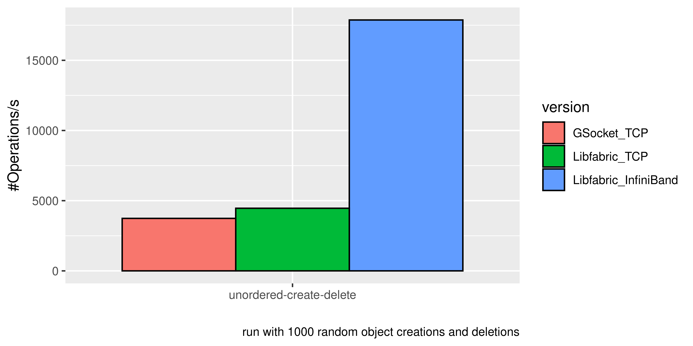
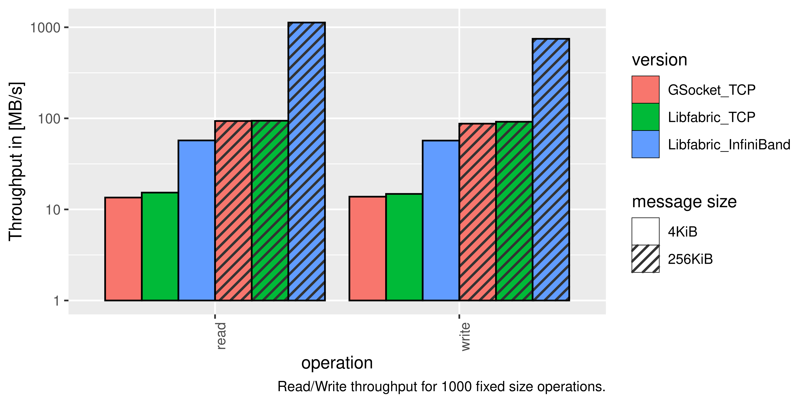
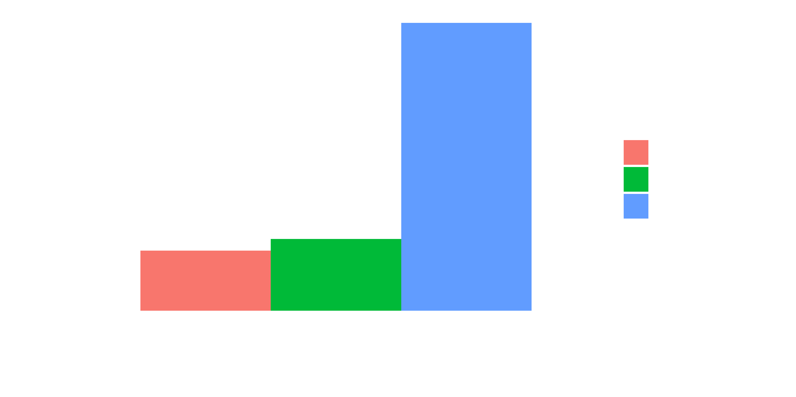
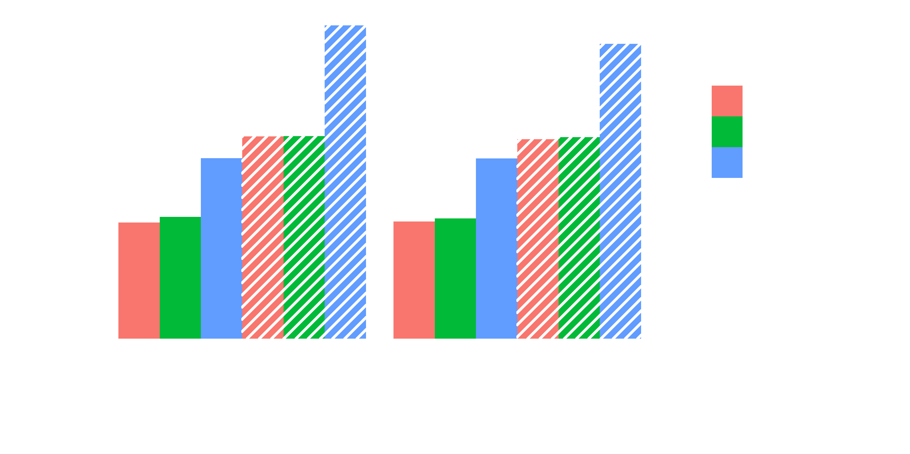

Libfabric: A generalized way for fabric communication
In this post, we will look at the challenges of efficient communication between processes and how Libfabric abstracts them. We will see how OFI (Open Fabrics Interfaces) enables a fast and generalized communication.
A fabric is nothing more or less than several, more or less uniform, nodes connected via links or, in other words, the typical HPC or cloud computing landscape.
Nodes can be linked via different physical media (e.g., copper or optical fiber) and various communication protocols. While the physical medium is hidden behind the network cards, the communication protocol is something we still need to manage in user-space because different protocols require other interactions with the network to function.
To have a unified interface for the typical messaging data transfer would be nice, while not necessarily being a game changer. But in perspective to RDMA, it differs.
Remote direct memory access (RDMA) sounds counter intuitive at first, because how would you access remote memory directly? Directly in this context means without involving the operating system and CPU. Instead, the data transfer is entirely managed by the NIC. Therefore, we only need to signal we want to read data X from source Y to the memory segment Z, and the NIC does the rest.
In contrast, for normal kernel mode networking, we will copy the buffer multiple times and run it through various layers of code (e.g., socket, TCP protocol implementation, and driver). This will cause a load on the CPU and bus, while RDMA, thanks to kernel bypass to the NIC, can offload a huge part from the network stack.
This opens many questions, to name a few:
- When is the memory transfer finished?
- How to avoid inconsistency due to invalidated caches?
- Is RDMA even possible with this NIC?
- How to queue RDMA requests?
The answers to these questions depend strongly on the implementation and the network protocol. Therefore, a unified solution is quite welcome if you want the flexibility to change your link type.
A short reminder: RDMA still uses the same network as typical network messages, therefore the bandwidth and latency will not change much, but it will reduce the work done by the CPU, which leads to fewer interrupts and more processing time for your calculation running.
Libfabric offers a unified interface to use different communication types over different communication protocols, and each time tries to minimize the overhead.
The supported communication types are:
- Message Queue: Message-based FIFO queue
- Tagged Message Queue: Similar to Message Queue but enables operations based on a 64-bit tag attached to each message
- RMA (remote memory access): Abstraction of RDMA to enable it also on systems that are not RDMA-capable
- Atomic: Allow atomic operations at the network level
JULEA is a flexible storage framework for clusters that allows offering arbitrary I/O interfaces to applications.
It runs completely in user space, which eases development and debugging.
Because it runs on a cluster, a lot of network communication must be handled.
Until now, it used TCP (via GSocket).
While TCP connections normally work everywhere, the cluster may provide better fabrics, which we were unable to use.
Now, with Libfabric, we can use a huge variety of other fabrics like InfiniBand.
For JULEA, Message Queue and RMA are the most interesting. Message Queue fits the communication structure currently used in JULEA. RMA enables processing many data transfers in parallel. With RMA, we can, for example, process a message with multiple read access and tell the link that the data have no specific order.
To achieve this, Libfabric uses different abstracted modules, where each of them is equipped with an optional argument to even use it only for one protocol or just let Libfabric decide what is best.
Each module enables us to create the next in the chain until we archive the connection we want. The modules of interest are:
- Fabric information: List of available networks, which can be filtered and is sorted by performance
- Fabric: All resources needed to use a network
- Domain: Represents a connection in a fabric (e.g., a port or a NIC)
- Endpoint: Communication portal to a domain
- Event queue: Reports asynchronous meta events for an endpoint, like connection established/shutdown
- Completion queue/counter: High-performance queue reports completed data transfers or just a counter
If we want, for example, to build a connection to a server (with a known address), we can use fi_getinfo to request all available fabrics which are capable of connecting to the server.
Then we pick the first of them (because this is likely the most performant) and construct a fabric. After this because we do not have special requirements (and have already defined our communication destination), we just create a domain at that fabric and then an endpoint with event and completion counter at that.
With the endpoint, we get a connect request that needs to be accepted from the server and confirmed via a FI_CONNECTED in the event queue.
Now each time the completion counter increases, we know something has happened; for simple communication, this is enough. We can bind different counters or queues to this if we want to differ between incoming and outgoing completion. Queues enable us also to keep track of an action based on a context we may freely choose (it is basically an ID).
If you want a more detailed explanation, the official introduction to the interface can be found here.
Libfabric allows using different fabrics with the same interface. This way, you can write RDMA-compatible code, and Libfabric makes it also work on a system that does not support RDMA.
 Comparing the performance of JULEA with GSocket using the operations per second for object creation and deletion. This shows that the performance via TCP is slightly in favor of Libfabric and that InfiniBand is multiple orders of magnitude faster than TCP, but impossible to use with GSocket.  Comparing performance of JULEA with GSocket and Libfabric network code using the througput of read and write operations. Shows that performance via TCP is similar, while performance via InfiniBand with Libfabric is multiple orders of mangitude faster, while impossible to use with GSocket.
 Comparing the performance of JULEA with GSocket using the operations per second for object creation and deletion. This shows that the performance via TCP is slightly in favor of Libfabric and that InfiniBand is multiple orders of magnitude faster than TCP, but impossible to use with GSocket.  Comparing performance of JULEA with GSocket and Libfabric network code using the througput of read and write operations. Shows that performance via TCP is similar, while performance via InfiniBand with Libfabric is multiple orders of mangitude faster, while impossible to use with GSocket.
We already tested it in JULEA.
We rewrote the GSocket network code with Libfabric.
This resulted in working InfiniBand and RDMA support.
But also without RDMA, its performance is still similar to the GSocket implementation.
Therefore, Libfabric enables to use the most efficient fabric available without having to modify the code.